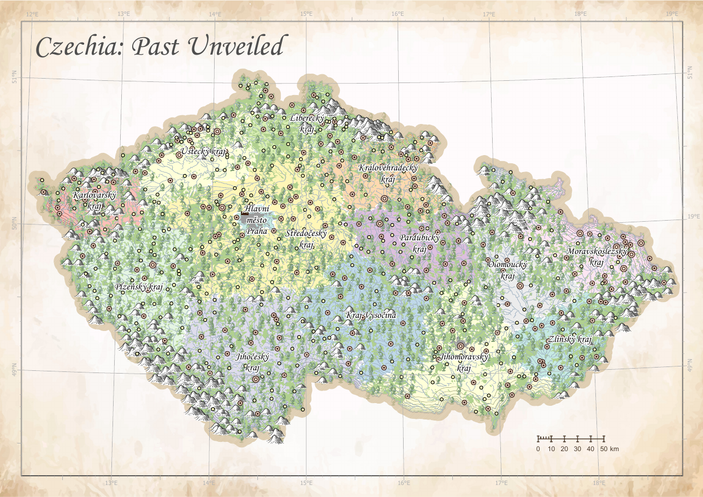
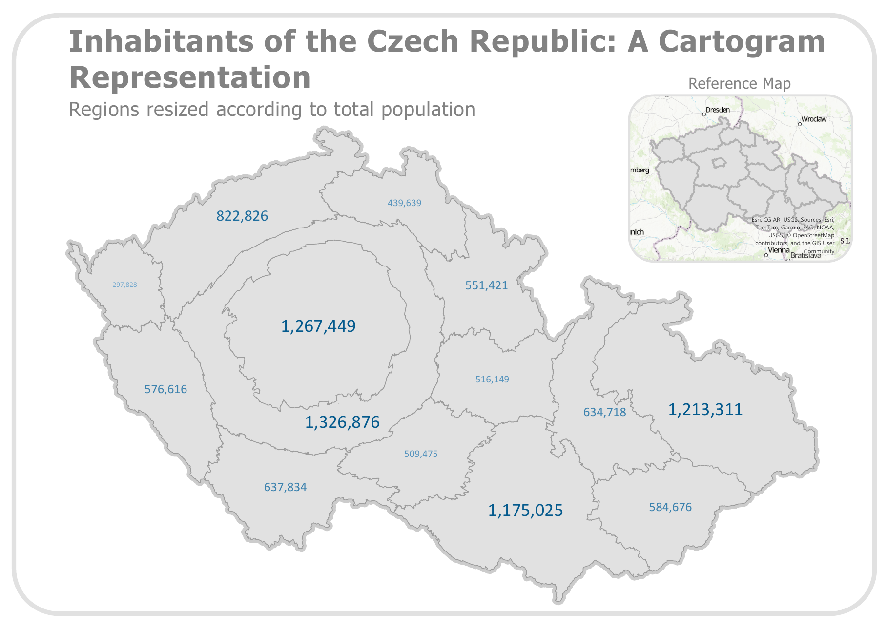
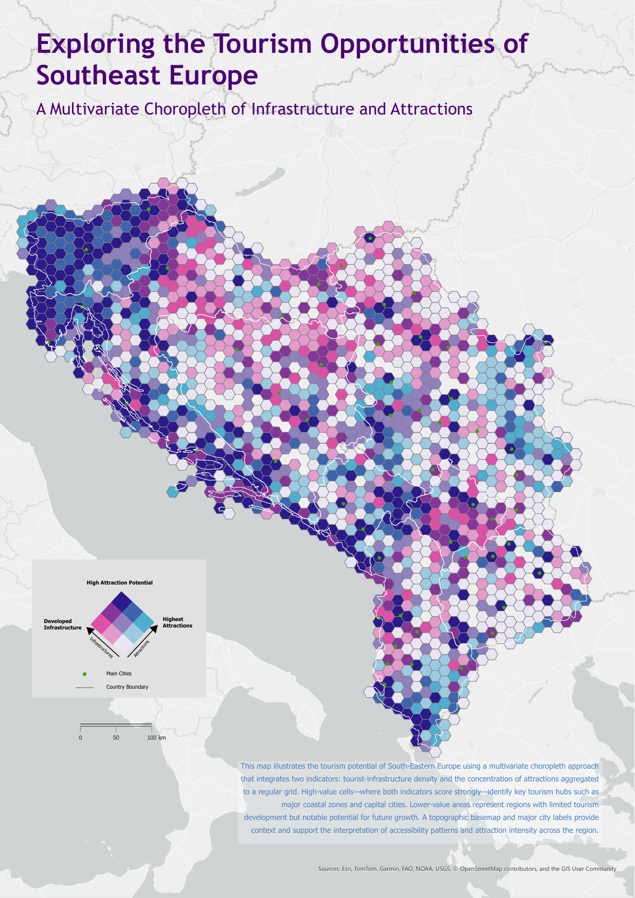
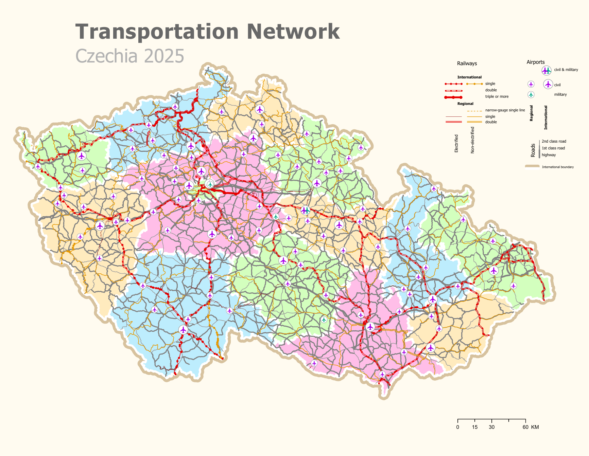
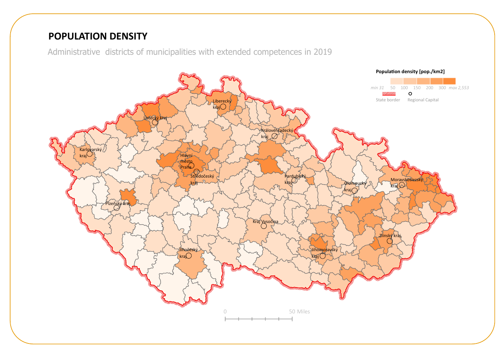
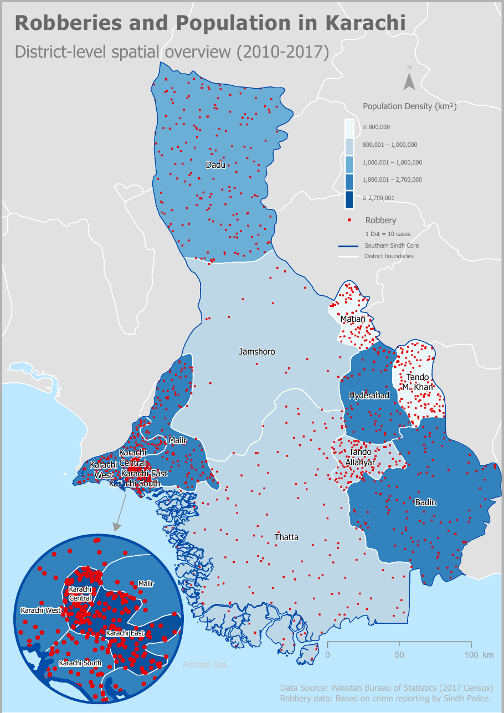
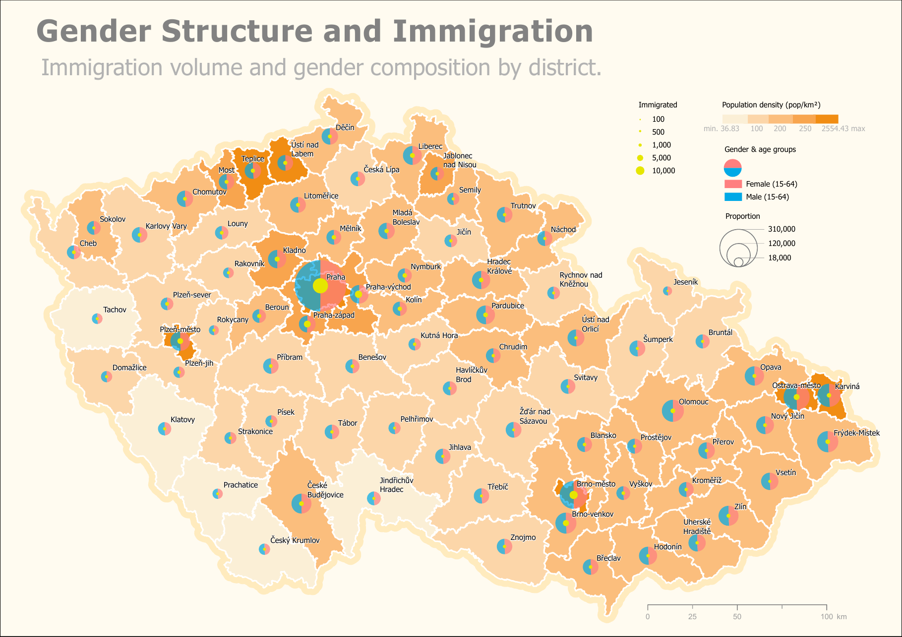

Czechia: Past Unveiled
A richly illustrated map combining Czech regional geography with historical places and landscape context.

A richly illustrated map combining Czech regional geography with historical places and landscape context.

Regions resized according to total population, with a reference map for geographic orientation.

A multivariate choropleth combining tourism-infrastructure density and attraction concentration.

A detailed transportation map showing roads, railways and airports across Czechia.

Population density across administrative districts of municipalities with extended competences.

A district-level spatial overview of robbery reports and population density in Southern Sindh.

Immigration volume and gender composition by district, with population density as context.